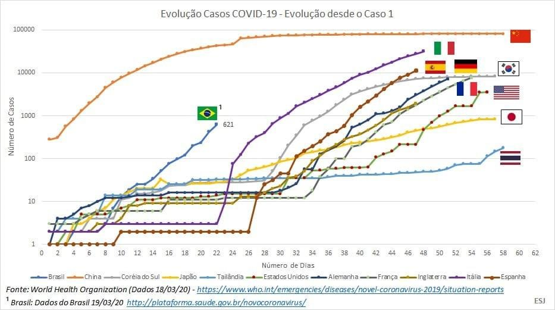
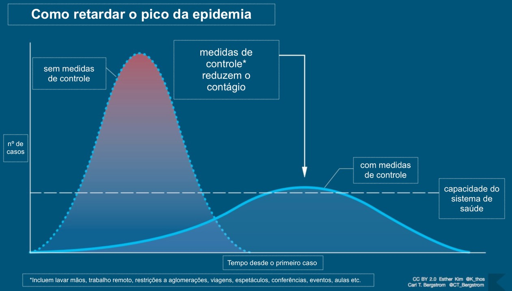

atualizado em: 21/03/2020 as 16:15
Brasil
Total de casos
1.028
Mortes
18
Curados
2

fonte: G1 globo.com
fonte: WHO.int
Gráfico elaborado pelo cientista Drew Harris e adaptado pelo biólogo Carl Bergstrom mostra como medidas de prevenção podem retardar o contágio da Covid-19 e evitar o colapso do sistema de saúde — Foto: Carl Bergstrom e Esther Kim/CC BY 2.0